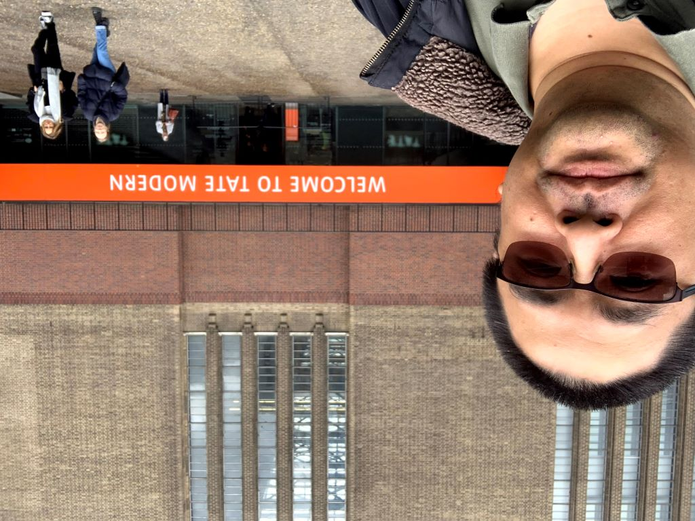

Hobby and Leisure Activity

The Arts:
- Supporter and frequent visitor of art museums
- Classical music events: Wiener Staatsoper, Hong Kong Philharmonic, Bayreuther Festspiele
- West End Shows: The Phantom of the Opera, The Mousetrap by Agatha Christie, The Book of Mormon
- William Shakesphere: Much Ado About Nothing, Macbeth, The Taming of the Shrew
- Others: Kodo, Cirque du Soleil, Video Game Music concerts
Gaming:
Anime and Manga:
- Contributor and member of FSU Japanese Animation Club of Tallahassee (JACT) and FSU Freecon
- Worked on various manga and anime fansub projects in the late 1990s/early 2000s
Sports and Outdoor Activities:
- Various Met Office sport activities
- Inactive member of World Tang Soo Do Association (WTSDA) -- last trained in a studio in Fairfax county
- Some experience with Aikido
- Member of National Trust, and frequent vistor to NT properties and other public gardens
Return to index page
This is last updated on